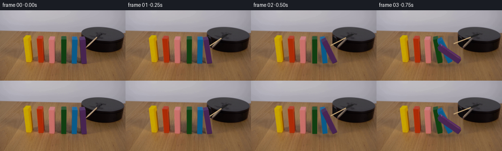
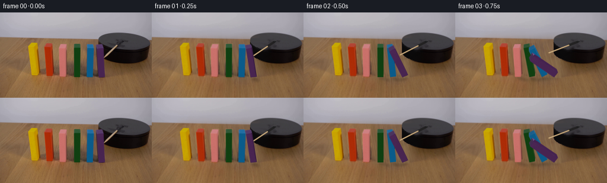
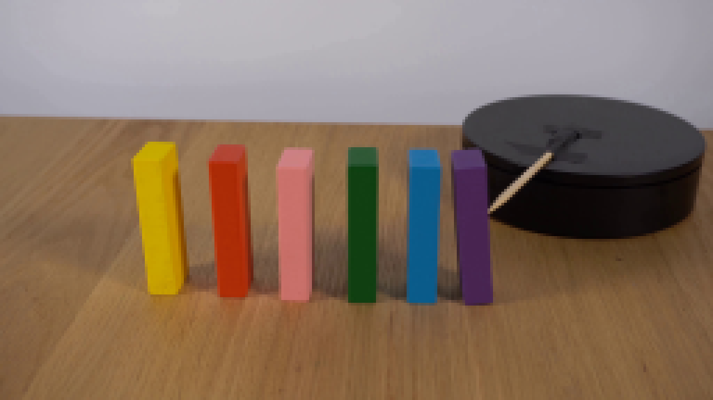
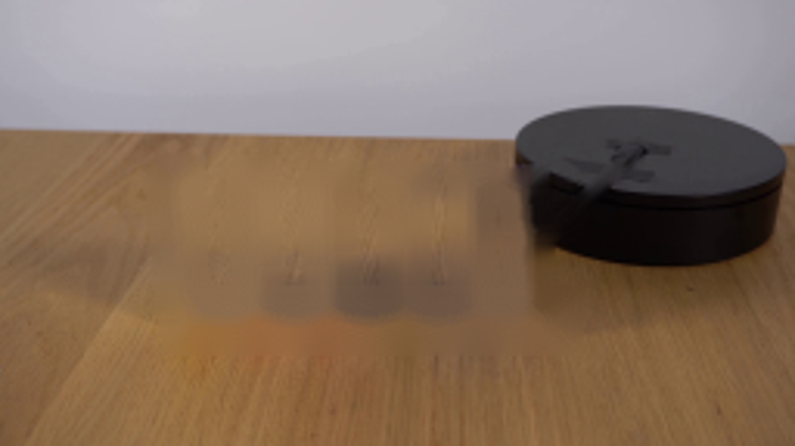
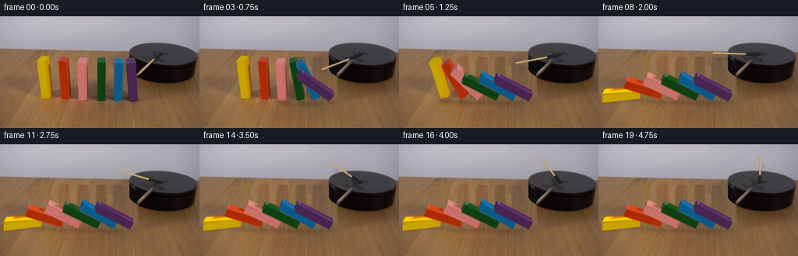
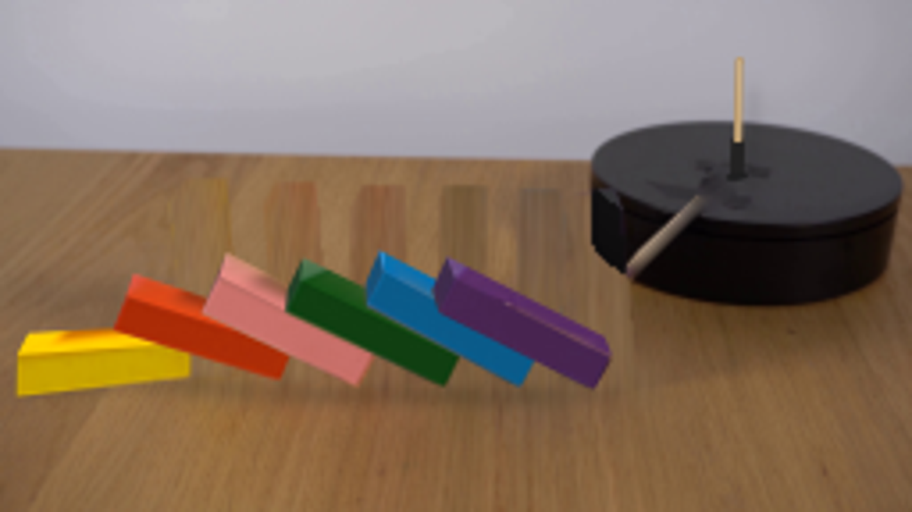
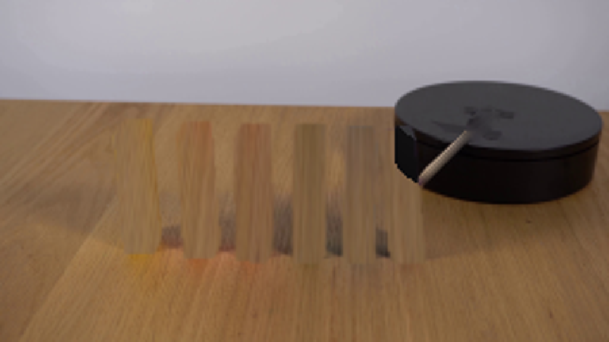
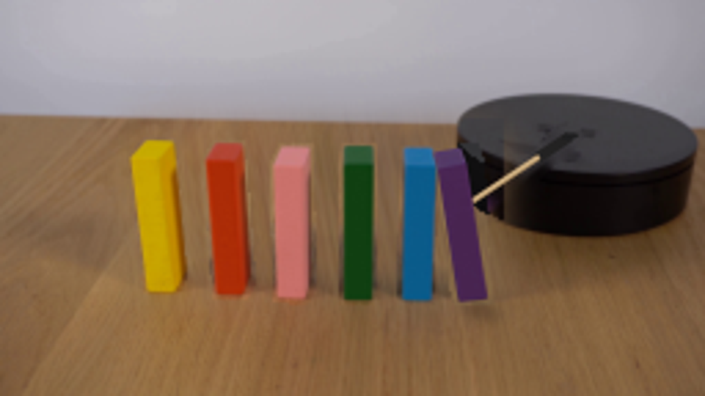
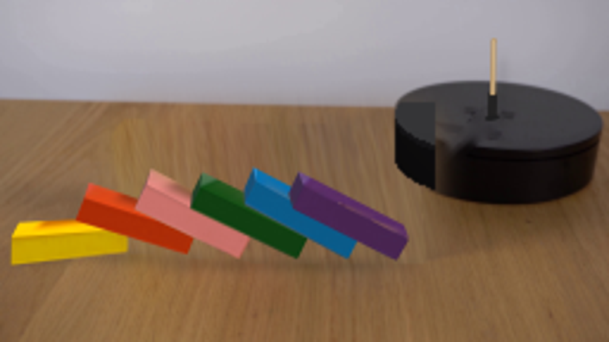

CODING AGENTS AS PIXEL WORLD MODELS
traex/GPT-6.1-Sol · 0035
点击播放 · 原生 RGB 像素
逐轮保存的候选
回放视频、检查图与代码变化。
每份候选均可单独播放。实际图片检查记录在下方工具轨迹中。
候选 01播放与检查图
点击播放 · 原生 RGB 像素


展开代码变化
--- 上一保存版本
+++ 本次保存版本
@@ -0,0 +1,236 @@
+from pathlib import Path
+import math
+import cv2
+import numpy as np
+from PIL import Image
+from scipy.ndimage import gaussian_filter
+import artifact_io
+
+ROOT=Path(__file__).resolve().parent
+S=4
+W,H=256,144
+source=np.array(Image.open(ROOT/'first_frame.png').convert('RGB'))
+src_hi=cv2.resize(source,(W*S,H*S),interpolation=cv2.INTER_CUBIC)
+# measured visible face corner locations, going around each prism
+fronts=[[(48,57.3),(59.7,57.5),(63,105.8),(53.3,105.9)],
+[(75,58.3),(85.4,58.4),(88.5,107.0),(78.5,107.0)],
+[(99.3,60.1),(110.9,60.2),(110.5,109.1),(100.5,108.9)],
+[(124.5,59.5),(134.4,59.5),(134.4,109.0),(124.7,109.0)],
+[(146.7,60.1),(157.6,60.0),(156.4,109.1),(145.9,109.0)],
+[(163.5,61.1),(173.9,60.2),(177.0,109.5),(166.6,109.5)]]
+backs=[[(53,51.5),(62.7,51.7),(66,100.6),(56.8,100.6)],
+[(78.6,52.3),(87.3,52.4),(91.3,102.0),(81.5,101.7)],
+[(102,53.5),(112.7,53.6),(113,103.2),(103,102.9)],
+[(125.1,53.1),(135.0,53.3),(135.1,103.0),(125.2,103)],
+[(146.4,54.3),(156.3,54.4),(156.1,103.0),(146.3,103.1)],
+[(161.5,55.0),(171.6,54.3),(174.7,103.8),(164.7,103.8)]]
+fronts=np.array(fronts,dtype=np.float32);backs=np.array(backs,dtype=np.float32)
+
+# Removal zones are used only for local clean-plate image operations.
+objmask=[]
+for f,b in zip(fronts,backs):
+ m=np.zeros((H,W),np.uint8)
+ pts=np.vstack([f,b]);hull=cv2.convexHull(pts).astype(np.int32)
+ cv2.fillConvexPoly(m,hull,255)
+ m=cv2.dilate(m,np.ones((3,3),np.uint8))
+ objmask.append(m)
+allmask=np.maximum.reduce(objmask)
+# Wooden tabletop clean plate taken from unobstructed adjacent tabletop.
+yy,xx=np.indices((H,W),dtype=np.float32)
+# sampling follows the direction of the wood grain in the original scene
+ys=112+(yy-48)*.34
+xs=xx+(xx-125)*.065
+patch=cv2.remap(source,xs,ys,cv2.INTER_CUBIC,borderMode=cv2.BORDER_REFLECT_101).astype(float)
+patch[:,:,0]*=.95;patch[:,:,1]*=.99;patch[:,:,2]*=1.08
+# Match the low frequency illumination to clear strips to either side of the row.
+patch=np.clip(patch,0,255).astype(np.uint8)
+# Dark disk hidden behind the purple block: continue its top rim and side.
+disk=np.array(source,copy=True)
+for y in range(44,91):
+ for x in range(160,181):
+ u=(x-209)/43.7
+ # slightly rotated flattened ellipse
+ v=(y-50.3-.055*(x-209))/16.1
+ if u*u+v*v<=1:
+ val=51+int(3*(y-44)/35)
+ disk[y,x]=[val,val,val+3]
+ elif abs(u)<1:
+ upper=50.3+.055*(x-209)+16.1*math.sqrt(max(0,1-u*u))
+ if upper<y<upper+18.0:
+ val=max(9,int(17-4*(y-upper)/18))
+ disk[y,x]=[val,val-1,val]
+# Empty table (replace background only where a block previously covered it).
+plate=source.copy()
+for i,m in enumerate(objmask):
+ mm=gaussian_filter(m.astype(float)/255,.65)
+ # Use the reconstruction of the platform in the small occluded region.
+ fill=patch.copy()
+ if i==5:
+ use=np.any(disk!=source,axis=2)
+ fill[use]=disk[use]
+ plate=np.uint8(np.clip(plate*(1-mm[:,:,None])+fill*mm[:,:,None],0,255))
+# Remove the original rod and the small rectangular dark rotating arm.
+rodmask=np.zeros((H,W),np.uint8)
+cv2.line(rodmask,(176,77),(198,56),255,4)
+cv2.line(rodmask,(198,56),(207,49),255,5)
+cv2.circle(rodmask,(205,51),2,255,-1)
+# don't remove visible blocks
+rodmask[allmask>0]=0
+clean=cv2.inpaint(source,rodmask,3,cv2.INPAINT_TELEA)
+# On the tabletop use neighboring actual wood; the disk is inpainted locally.
+plate[rodmask>0]=clean[rodmask>0]
+
+# Images for face texture; resampled from the original painted wooden faces.
+face_src=[]
+for f,b in zip(fronts,backs):
+ face_src.append([f,np.array([f[1],b[1],b[2],f[2]]),np.array([f[0],b[0],b[1],f[1]])])
+
+# Rigid rectangular domino section collision, with one lower edge remaining on the table.
+bases=fronts[:,3,0].astype(float)
+widths=np.array([9.7,10.0,10.0,9.7,10.5,10.4])
+heights=np.array([49.,49.,49.,49.,49.,49.])
+def rect(i,theta):
+ w=widths[i];h=heights[i];c=math.cos(theta);s=math.sin(theta)
+ return np.array([[bases[i],0],[bases[i]+w*c,w*s],[bases[i]+w*c-h*s,w*s+h*c],[bases[i]-h*s,h*c]])
+def overlaps(a,b):
+ for p in (a,b):
+ for j in range(4):
+ e=p[(j+1)%4]-p[j];n=np.array([-e[1],e[0]])
+ aa=a@n;bb=b@n
+ if aa.max()<=bb.min()+1e-5 or bb.max()<=aa.min()+1e-5:return False
+ return True
+rest=[math.pi/2]
+for i in range(1,6):
+ low,high=0.,math.pi/2
+ for _ in range(45):
+ mid=(low+high)/2
+ if overlaps(rect(i,mid),rect(i-1,rest[-1])):high=mid
+ else:low=mid
+ rest.append(low)
+rest=np.array(rest)
+
+# Angle trajectories give a right-to-left chain with acceleration from gravity.
+starts=np.array([1.00,.83,.65,.48,.29,.07])
+def angles(t):
+ out=[]
+ for i in range(6):
+ q=max(0.,t-starts[i]);dur=.73 if i else .82
+ u=min(q/dur,1.)
+ # small initial velocity, acceleration, then the final collision
+ a=rest[i]*min(1.,.16*u+.84*u*u)
+ if q>dur:
+ a-=.026*math.exp(-(q-dur)*7)*max(0,math.sin((q-dur)*23))
+ out.append(a)
+ return np.array(out)
+
+def vertices(i,a):
+ f=fronts[i];b=backs[i];pivot=f[3]
+ # The first-frame small perspective taper is retained during rigid motion.
+ def rot(points):
+ d=points-pivot
+ x=d[:,0];z=-d[:,1]
+ c=math.cos(a);s=math.sin(a)
+ return np.stack([pivot[0]+x*c-z*s,pivot[1]-x*s-z*c],1).astype(np.float32)
+ # depth vanishing lines are stable, as the rotation axis is the edge into the table.
+ nf=rot(f)
+ depth=b-f
+ nb=nf+depth
+ return nf,nb
+
+def draw_face(canvas,qsrc,qdest,gain):
+ if abs(cv2.contourArea(qdest))<.12:return
+ mat=cv2.getPerspectiveTransform((qsrc*S).astype(np.float32),(qdest*S).astype(np.float32))
+ tex=cv2.warpPerspective(src_hi,mat,(W*S,H*S),flags=cv2.INTER_LINEAR)
+ alpha=np.zeros((H*S,W*S),np.uint8)
+ cv2.fillConvexPoly(alpha,np.round(qdest*S).astype(np.int32),255,lineType=cv2.LINE_AA)
+ a=alpha.astype(float)[:,:,None]/255
+ val=np.clip(tex.astype(float)*gain,0,255)
+ canvas[:]=canvas*(1-a)+val*a
+
+def draw_block(canvas,i,a):
+ nf,nb=vertices(i,a)
+ q=[nf,np.array([nf[1],nb[1],nb[2],nf[2]]),np.array([nf[0],nb[0],nb[1],nf[1]])]
+ # Long right side becomes the upward-facing face as a block falls to the left.
+ side_gain=1+(.47 if i==0 else .30)*math.sin(a)
+ top_gain=1-.30*math.sin(a)
+ # The end-cap goes behind the long faces.
+ for k in (2,0,1):
+ gain=[1.,side_gain,top_gain][k]
+ draw_face(canvas,face_src[i][k],q[k],gain)
+
+def stick_points(t):
+ th=math.radians(121.0+31.5*t)
+ p=np.array([206.8,49.4])
+ d=np.array([math.cos(th),.54*math.sin(th)])
+ return p,p+18*d,p+59.8*d
+
+def line_poly(canvas,a,b,width,color):
+ a=np.asarray(a);b=np.asarray(b);v=b-a;n=np.array([-v[1],v[0]])/np.linalg.norm(v)*width/2
+ poly=np.array([a+n,b+n,b-n,a-n])*S
+ cv2.fillConvexPoly(canvas,np.round(poly).astype(int),color,lineType=cv2.LINE_AA)
+ cv2.circle(canvas,tuple(np.round(b*S).astype(int)),max(1,round(width*S/2)),color,-1,lineType=cv2.LINE_AA)
+
+def frame_at(t):
+ aa=angles(t)
+ moved=aa>1e-5
+ bg=clean.copy()
+ # clean plates are exposed only as the corresponding domino starts to fall
+ for i in range(6):
+ if moved[i]:
+ m=gaussian_filter(objmask[i].astype(float)/255,.4)
+ bg=np.uint8(np.clip(bg*(1-m[:,:,None])+plate*m[:,:,None],0,255))
+ # Original contact shadow is progressively replaced by the new one.
+ shadow=np.zeros((H,W),float)
+ x=int(bases[i]);cv2.ellipse(shadow,(x+9,108),(11,6),0,0,360,1,-1)
+ shadow=gaussian_filter(shadow,3.0)*.90
+ shadow[allmask>0]=0
+ shadow[(xx>181)&(yy<94)]=0
+ bg=np.uint8(np.clip(bg*(1-shadow[:,:,None])+patch*shadow[:,:,None],0,255))
+ canvas=cv2.resize(bg,(W*S,H*S),interpolation=cv2.INTER_CUBIC).astype(float)
+ # Soft directional cast shadows on the tabletop.
+ shadow=np.zeros((H*S,W*S),np.uint8)
+ for i,a in enumerate(aa):
+ if not moved[i]:continue
+ f,b=vertices(i,a)
+ ground=[]
+ # z is transformed with the same rigid rotation; light lies upper-left.
+ p=fronts[i][3]
+ for point in np.vstack([f,b]):
+ z=max(0,p[1]-point[1])
+ ground.append([point[0]+z*.28,point[1]+z+z*.12])
+ hull=cv2.convexHull(np.round(np.array(ground)*S).astype(np.int32))
+ cv2.fillConvexPoly(shadow,hull,255)
+ sha=cv2.GaussianBlur(shadow,(0,0),2.1*S).astype(float)/255*.20
+ canvas*=1-sha[:,:,None]
+ p,b,e=stick_points(t)
+ # The raised rotating arm casts a broad unobtrusive shadow on the platform/table.
+ rodsh=np.zeros((H*S,W*S),np.uint8)
+ cv2.line(rodsh,tuple(np.round((p+[4,8])*S).astype(int)),tuple(np.round((e+[4,8])*S).astype(int)),100,2*S,cv2.LINE_AA)
+ rodsh=cv2.GaussianBlur(rodsh,(0,0),1.8*S).astype(float)/255*.30
+ canvas*=1-rodsh[:,:,None]
+ canvas=np.clip(canvas,0,255).astype(np.uint8)
+ line_poly(canvas,p,b,3.6,(35,34,34))
+ line_poly(canvas,b,e,1.8,(178,145,100))
+ # highlight along the wooden grain, maintaining a solid cylindrical rod
+ line_poly(canvas,b+[0,-.24],e+[0,-.24],.65,(211,182,137))
+ cv2.ellipse(canvas,tuple(np.round(p*S).astype(int)),(3*S,1*S),-8,0,360,(30,30,31),-1,cv2.LINE_AA)
+ canvas=canvas.astype(float)
+ # Restore stationary blocks ahead of the rod, and draw the falling chain back to front.
+ for i in range(6):
+ if not moved[i]:
+ m=np.zeros((H*S,W*S),np.uint8)
+ pts=np.vstack([fronts[i],backs[i]])
+ cv2.fillConvexPoly(m,cv2.convexHull(np.round(pts*S).astype(np.int32)),255,cv2.LINE_AA)
+ al=m[:,:,None]/255.
+ canvas=canvas*(1-al)+src_hi*al
+ else:draw_block(canvas,i,aa[i])
+ return cv2.resize(np.uint8(np.clip(canvas,0,255)),(W,H),interpolation=cv2.INTER_AREA)
+
+def main():
+ frames=[source.copy()]
+ for n in range(1,20):frames.append(frame_at(n/4))
+ frames=np.array(frames,dtype=np.uint8)
+ artifact_io.save(frames,ROOT)
+ Image.fromarray(plate).save(ROOT/'.tmp/clean_plate.png')
+ print('rest angles',np.round(np.degrees(rest),1))
+if __name__=='__main__':main()
候选 02播放与检查图
点击播放 · 原生 RGB 像素

展开代码变化
--- 上一保存版本
+++ 本次保存版本
@@ -38,10 +38,10 @@
# Wooden tabletop clean plate taken from unobstructed adjacent tabletop.
yy,xx=np.indices((H,W),dtype=np.float32)
# sampling follows the direction of the wood grain in the original scene
-ys=112+(yy-48)*.34
-xs=xx+(xx-125)*.065
+ys=116+(yy-48)*.31
+xs=xx+(116-yy)*.20
patch=cv2.remap(source,xs,ys,cv2.INTER_CUBIC,borderMode=cv2.BORDER_REFLECT_101).astype(float)
-patch[:,:,0]*=.95;patch[:,:,1]*=.99;patch[:,:,2]*=1.08
+patch[:,:,0]*=.98;patch[:,:,1]*=1.04;patch[:,:,2]*=1.15
# Match the low frequency illumination to clear strips to either side of the row.
patch=np.clip(patch,0,255).astype(np.uint8)
# Dark disk hidden behind the purple block: continue its top rim and side.
@@ -59,26 +59,34 @@
if upper<y<upper+18.0:
val=max(9,int(17-4*(y-upper)/18))
disk[y,x]=[val,val-1,val]
-# Empty table (replace background only where a block previously covered it).
-plate=source.copy()
-for i,m in enumerate(objmask):
- mm=gaussian_filter(m.astype(float)/255,.65)
- # Use the reconstruction of the platform in the small occluded region.
- fill=patch.copy()
- if i==5:
- use=np.any(disk!=source,axis=2)
- fill[use]=disk[use]
- plate=np.uint8(np.clip(plate*(1-mm[:,:,None])+fill*mm[:,:,None],0,255))
-# Remove the original rod and the small rectangular dark rotating arm.
+# Remove the original arm before constructing the table plate.
rodmask=np.zeros((H,W),np.uint8)
-cv2.line(rodmask,(176,77),(198,56),255,4)
+cv2.line(rodmask,(176,77),(199,55),255,5)
cv2.line(rodmask,(198,56),(207,49),255,5)
-cv2.circle(rodmask,(205,51),2,255,-1)
-# don't remove visible blocks
-rodmask[allmask>0]=0
-clean=cv2.inpaint(source,rodmask,3,cv2.INPAINT_TELEA)
-# On the tabletop use neighboring actual wood; the disk is inpainted locally.
-plate[rodmask>0]=clean[rodmask>0]
+rodmask=cv2.dilate(rodmask,np.ones((3,3),np.uint8))
+clean=cv2.inpaint(source,rodmask,4,cv2.INPAINT_TELEA)
+# Broad feathered table reconstruction avoids an outline of the removed blocks.
+region=np.zeros((H,W),float)
+region[49:113,46:182]=1
+region=gaussian_filter(region,7)
+region=np.maximum(region,gaussian_filter(allmask.astype(float)/255,.38))
+plate=np.uint8(np.clip(clean*(1-region[:,:,None])+patch*region[:,:,None],0,255))
+# Recover the platform silhouette separately from the wood.
+diskregion=np.zeros((H,W),np.uint8)
+for y in range(43,90):
+ for x in range(160,183):
+ u=(x-209)/43.7
+ if abs(u)<1:
+ back=50.3+.055*(x-209)-16.1*math.sqrt(max(0,1-u*u))
+ front=50.3+.055*(x-209)+16.1*math.sqrt(max(0,1-u*u))
+ if back<=y<=front+18:
+ diskregion[y,x]=255
+recon=disk.copy()
+# The sampled disk regions from the input are retained wherever not occluded.
+occ=cv2.dilate(objmask[5],np.ones((3,3),np.uint8))
+recon[occ==0]=clean[occ==0]
+dm=gaussian_filter(diskregion.astype(float)/255,.40)
+plate=np.uint8(np.clip(plate*(1-dm[:,:,None])+recon*dm[:,:,None],0,255))
# Images for face texture; resampled from the original painted wooden faces.
face_src=[]
@@ -139,6 +147,7 @@
def draw_face(canvas,qsrc,qdest,gain):
if abs(cv2.contourArea(qdest))<.12:return
+ qsrc=qsrc+(qsrc.mean(axis=0)-qsrc)*.025
mat=cv2.getPerspectiveTransform((qsrc*S).astype(np.float32),(qdest*S).astype(np.float32))
tex=cv2.warpPerspective(src_hi,mat,(W*S,H*S),flags=cv2.INTER_LINEAR)
alpha=np.zeros((H*S,W*S),np.uint8)
@@ -173,19 +182,17 @@
def frame_at(t):
aa=angles(t)
moved=aa>1e-5
- bg=clean.copy()
- # clean plates are exposed only as the corresponding domino starts to fall
+ bg=plate.copy()
+ # Retain the still-upright blocks and their original cast shadows.
for i in range(6):
- if moved[i]:
- m=gaussian_filter(objmask[i].astype(float)/255,.4)
- bg=np.uint8(np.clip(bg*(1-m[:,:,None])+plate*m[:,:,None],0,255))
- # Original contact shadow is progressively replaced by the new one.
- shadow=np.zeros((H,W),float)
- x=int(bases[i]);cv2.ellipse(shadow,(x+9,108),(11,6),0,0,360,1,-1)
- shadow=gaussian_filter(shadow,3.0)*.90
- shadow[allmask>0]=0
- shadow[(xx>181)&(yy<94)]=0
- bg=np.uint8(np.clip(bg*(1-shadow[:,:,None])+patch*shadow[:,:,None],0,255))
+ if not moved[i]:
+ m=objmask[i].astype(float)/255
+ bg=np.uint8(bg*(1-m[:,:,None])+source*m[:,:,None])
+ sh=np.zeros((H,W),float)
+ cv2.ellipse(sh,(int(bases[i]+10),103),(10,5),0,0,360,1,-1)
+ sh=gaussian_filter(sh,3)*.55
+ sh[allmask>0]=0
+ bg=np.uint8(bg*(1-sh[:,:,None])+source*sh[:,:,None])
canvas=cv2.resize(bg,(W*S,H*S),interpolation=cv2.INTER_CUBIC).astype(float)
# Soft directional cast shadows on the tabletop.
shadow=np.zeros((H*S,W*S),np.uint8)
候选 03播放与检查图
候选 04播放与检查图
点击播放 · 原生 RGB 像素

展开代码变化
--- 上一保存版本
+++ 本次保存版本
@@ -81,14 +81,36 @@
front=50.3+.055*(x-209)+16.1*math.sqrt(max(0,1-u*u))
if back<=y<=front+18:
diskregion[y,x]=255
-recon=disk.copy()
-# The sampled disk regions from the input are retained wherever not occluded.
-occ=cv2.dilate(objmask[5],np.ones((3,3),np.uint8))
-recon[occ==0]=clean[occ==0]
+recon=clean.copy()
+for y in range(42,89):
+ for x in range(160,184):
+ u=(x-209)/43.7
+ if abs(u)>=1:continue
+ back=50.3+.055*(x-209)-16.1*math.sqrt(1-u*u)
+ front=50.3+.055*(x-209)+16.1*math.sqrt(1-u*u)
+ if back<=y<=front+18:
+ if y<=front-1.0:
+ val=53.5-.055*(y-46)+.009*(x-176)
+ recon[y,x]=[val,val,val+2]
+ elif y<=front+1.5:
+ recon[y,x]=[20,19,21]
+ else:
+ val=12.5+.05*(x-170)-.09*(y-front)
+ recon[y,x]=[val,val-1,val-.4]
dm=gaussian_filter(diskregion.astype(float)/255,.40)
plate=np.uint8(np.clip(plate*(1-dm[:,:,None])+recon*dm[:,:,None],0,255))
# Images for face texture; resampled from the original painted wooden faces.
+texture_images=[src_hi]*6
+purple=source.copy().astype(float)
+for y in range(60,111):
+ for x in range(173,180):
+ # Narrow side face: unobscured violet wood grain color.
+ if x<174+(y-60)*.065:
+ continue
+ noise=.9*math.sin(y*.5+x*1.3)
+ purple[y,x]=np.array([56,29,66])+noise
+texture_images[5]=cv2.resize(np.uint8(np.clip(purple,0,255)),(W*S,H*S),interpolation=cv2.INTER_CUBIC)
face_src=[]
for f,b in zip(fronts,backs):
face_src.append([f,np.array([f[1],b[1],b[2],f[2]]),np.array([f[0],b[0],b[1],f[1]])])
@@ -145,11 +167,11 @@
nb=nf+depth
return nf,nb
-def draw_face(canvas,qsrc,qdest,gain):
+def draw_face(canvas,qsrc,qdest,gain,texture):
if abs(cv2.contourArea(qdest))<.12:return
qsrc=qsrc+(qsrc.mean(axis=0)-qsrc)*.025
mat=cv2.getPerspectiveTransform((qsrc*S).astype(np.float32),(qdest*S).astype(np.float32))
- tex=cv2.warpPerspective(src_hi,mat,(W*S,H*S),flags=cv2.INTER_LINEAR)
+ tex=cv2.warpPerspective(texture,mat,(W*S,H*S),flags=cv2.INTER_LINEAR)
alpha=np.zeros((H*S,W*S),np.uint8)
cv2.fillConvexPoly(alpha,np.round(qdest*S).astype(np.int32),255,lineType=cv2.LINE_AA)
a=alpha.astype(float)[:,:,None]/255
@@ -165,7 +187,7 @@
# The end-cap goes behind the long faces.
for k in (2,0,1):
gain=[1.,side_gain,top_gain][k]
- draw_face(canvas,face_src[i][k],q[k],gain)
+ draw_face(canvas,face_src[i][k],q[k],gain,texture_images[i] if k==1 else src_hi)
def stick_points(t):
th=math.radians(121.0+31.5*t)
候选 05播放与检查图
候选 06播放与检查图
点击播放 · 原生 RGB 像素

展开代码变化
--- 上一保存版本
+++ 本次保存版本
@@ -74,7 +74,7 @@
# Recover the platform silhouette separately from the wood.
diskregion=np.zeros((H,W),np.uint8)
for y in range(43,90):
- for x in range(160,183):
+ for x in range(160,220):
u=(x-209)/43.7
if abs(u)<1:
back=50.3+.055*(x-209)-16.1*math.sqrt(max(0,1-u*u))
@@ -83,31 +83,33 @@
diskregion[y,x]=255
recon=clean.copy()
for y in range(42,89):
- for x in range(160,184):
+ for x in range(160,210):
u=(x-209)/43.7
if abs(u)>=1:continue
back=50.3+.055*(x-209)-16.1*math.sqrt(1-u*u)
front=50.3+.055*(x-209)+16.1*math.sqrt(1-u*u)
if back<=y<=front+18:
if y<=front-1.0:
- val=53.5-.055*(y-46)+.009*(x-176)
- recon[y,x]=[val,val,val+2]
+ col=source[y,225].astype(float)
+ recon[y,x]=np.clip(col+(.020*(x-209)),0,255)
elif y<=front+1.5:
recon[y,x]=[20,19,21]
else:
val=12.5+.05*(x-170)-.09*(y-front)
recon[y,x]=[val,val-1,val-.4]
dm=gaussian_filter(diskregion.astype(float)/255,.40)
-plate=np.uint8(np.clip(plate*(1-dm[:,:,None])+recon*dm[:,:,None],0,255))
+plate=np.uint8(np.clip(plate*(1-dm[:,:,None])+clean*dm[:,:,None],0,255))
+fade=np.clip((209-xx)/30,0,1)
+fade=fade*fade*(3-2*fade)
+cm=dm*fade
+plate=np.uint8(np.clip(plate*(1-cm[:,:,None])+recon*cm[:,:,None],0,255))
# Images for face texture; resampled from the original painted wooden faces.
texture_images=[src_hi]*6
purple=source.copy().astype(float)
for y in range(60,111):
- for x in range(173,180):
+ for x in range(172,181):
# Narrow side face: unobscured violet wood grain color.
- if x<174+(y-60)*.065:
- continue
noise=.9*math.sin(y*.5+x*1.3)
purple[y,x]=np.array([56,29,66])+noise
texture_images[5]=cv2.resize(np.uint8(np.clip(purple,0,255)),(W*S,H*S),interpolation=cv2.INTER_CUBIC)
可观测工具轨迹
实际执行的命令与返回图片。
命令 1exit 0
/bin/bash -lc "ls -la && cat prompt.txt && printf '\\n---RULES---\\n' && cat GENERATION_RULES.md"
命令 2exit 0
/bin/bash -lc "cat artifact_io.py && python - <<'PY'
from PIL import Image
im=Image.open('first_frame.png'); print(im.size); im.resize((1024,576)).save('.tmp/zoom.png')
PY"命令 3exit 0
/bin/bash -lc "python - <<'PY'
from PIL import Image
im=Image.open('first_frame.png'); im.resize((1280,720),Image.Resampling.NEAREST).save('.tmp/nearest.png')
import importlib.util
for m in ['cv2','numpy','scipy']: print(m, bool(importlib.util.find_spec(m)))
PY"命令 4exit 0
/bin/bash -lc "cat > .tmp/test_bg.py <<'PY'
import cv2, numpy as np
from PIL import Image
im=np.array(Image.open('first_frame.png'))
m=np.zeros((144,256),np.uint8)
polys=[[(46,57),(53,49),(65,50),(67,103),(64,108),(51,108)],[(73,57),(77,50),(88,50),(92,106),(88,110),(76,109)],[(97,59),(101,52),(114,52),(115,109),(109,112),(98,111)],[(122,52),(138,52),(138,111),(122,111)],[(144,52),(159,52),(160,110),(144,111)],[(160,54),(176,53),(180,111),(164,112)]]
for p in polys:cv2.fillPoly(m,[np.array(p)],255)
cv2.rectangle(m,(52,92),(187,114),255,-1)
cv2.line(m,(176,76),(198,54),255,5)
base=cv2.inpaint(im,m,5,cv2.INPAINT_TELEA)
Image.fromarray(base).resize((1024,576)).save('.tmp/bg_test.png')
Image.fromarray(m).save('.tmp/mask.png')
PY
python .tmp/test_bg.py"命令 5exit 0
/bin/bash -lc "python - <<'PY'
import cv2,numpy as np
im=cv2.imread('first_frame.png');hsv=cv2.cvtColor(im,cv2.COLOR_BGR2HSV)
for x0,x1 in [(45,69),(73,93),(97,116),(121,140),(143,161),(160,180)]:
m=((hsv[:,:,1]>100)&(hsv[:,:,2]>45));m[:,:x0]=False;m[:,x1:]=False
cs,_=cv2.findContours(m.astype('uint8'),cv2.RETR_EXTERNAL,cv2.CHAIN_APPROX_SIMPLE)
c=max(cs,key=cv2.contourArea);print(x0,cv2.approxPolyDP(c,1.1,True).reshape(-1,2).tolist())
print('front',im[80,x0+9][::-1], 'top',im[55,x0+10][::-1])
PY"命令 6exit 0
/bin/bash -lc "cat > generate.py <<'PY'
from pathlib import Path
import math
import cv2
import numpy as np
from PIL import Image
from scipy.ndimage import gaussian_filter
import artifact_io
ROOT=Path(__file__).resolve().parent
S=4
W,H=256,144
source=np.array(Image.open(ROOT/'first_frame.png').convert('RGB'))
src_hi=cv2.resize(source,(W*S,H*S),interpolation=cv2.INTER_CUBIC)
# measured visible face corner locations, going around each prism
fronts=[[(48,57.3),(59.7,57.5),(63,105.8),(53.3,105.9)],
[(75,58.3),(85.4,58.4),(88.5,107.0),(78.5,107.0)],
[(99.3,60.1),(110.9,60.2),(110.5,109.1),(100.5,108.9)],
[(124.5,59.5),(134.4,59.5),(134.4,109.0),(124.7,109.0)],
[(146.7,60.1),(157.6,60.0),(156.4,109.1),(145.9,109.0)],
[(163.5,61.1),(173.9,60.2),(177.0,109.5),(166.6,109.5)]]
backs=[[(53,51.5),(62.7,51.7),(66,100.6),(56.8,100.6)],
[(78.6,52.3),(87.3,52.4),(91.3,102.0),(81.5,101.7)],
[(102,53.5),(112.7,53.6),(113,103.2),(103,102.9)],
[(125.1,53.1),(135.0,53.3),(135.1,103.0),(125.2,103)],
[(146.4,54.3),(156.3,54.4),(156.1,103.0),(146.3,103.1)],
[(161.5,55.0),(171.6,54.3),(174.7,103.8),(164.7,103.8)]]
fronts=np.array(fronts,dtype=np.float32);backs=np.array(backs,dtype=np.float32)
# Removal zones are used only for local clean-plate image operations.
objmask=[]
for f,b in zip(fronts,backs):
m=np.zeros((H,W),np.uint8)
pts=np.vstack([f,b]);hull=cv2.convexHull(pts).astype(np.int32)
cv2.fillConvexPoly(m,hull,255)
m=cv2.dilate(m,np.ones((3,3),np.uint8))
objmask.append(m)
allmask=np.maximum.reduce(objmask)
# Wooden tabletop clean plate taken from unobstructed adjacent tabletop.
yy,xx=np.indices((H,W),dtype=np.float32)
# sampling follows the direction of the wood grain in the original scene
ys=112+(yy-48)*.34
xs=xx+(xx-125)*.065
patch=cv2.remap(source,xs,ys,cv2.INTER_CUBIC,borderMode=cv2.BORDER_REFLECT_101).astype(float)
patch[:,:,0]*=.95;patch[:,:,1]*=.99;patch[:,:,2]*=1.08
# Match the low frequency illumination to clear strips to either side of the row.
patch=np.clip(patch,0,255).astype(np.uint8)
# Dark disk hidden behind the purple block: continue its top rim and side.
disk=np.array(source,copy=True)
for y in range(44,91):
for x in range(160,181):
u=(x-209)/43.7
# slightly rotated flattened ellipse
v=(y-50.3-.055*(x-209))/16.1
if u*u+v*v<=1:
val=51+int(3*(y-44)/35)
disk[y,x]=[val,val,val+3]
elif abs(u)<1:
upper=50.3+.055*(x-209)+16.1*math.sqrt(max(0,1-u*u))
if upper<y<upper+18.0:
val=max(9,int(17-4*(y-upper)/18))
disk[y,x]=[val,val-1,val]
# Empty table (replace background only where a block previously covered it).
plate=source.copy()
for i,m in enumerate(objmask):
mm=gaussian_filter(m.astype(float)/255,.65)
# Use the reconstruction of the platform in the small occluded region.
fill=patch.copy()
if i==5:
use=np.any(disk"'!=source,axis=2)
fill[use]=disk[use]
plate=np.uint8(np.clip(plate*(1-mm[:,:,None])+fill*mm[:,:,None],0,255))
# Remove the original rod and the small rectangular dark rotating arm.
rodmask=np.zeros((H,W),np.uint8)
cv2.line(rodmask,(176,77),(198,56),255,4)
cv2.line(rodmask,(198,56),(207,49),255,5)
cv2.circle(rodmask,(205,51),2,255,-1)
# don'"'t remove visible blocks
rodmask[allmask>0]=0
clean=cv2.inpaint(source,rodmask,3,cv2.INPAINT_TELEA)
# On the tabletop use neighboring actual wood; the disk is inpainted locally.
plate[rodmask>0]=clean[rodmask>0]
# Images for face texture; resampled from the original painted wooden faces.
face_src=[]
for f,b in zip(fronts,backs):
face_src.append([f,np.array([f[1],b[1],b[2],f[2]]),np.array([f[0],b[0],b[1],f[1]])])
# Rigid rectangular domino section collision, with one lower edge remaining on the table.
bases=fronts[:,3,0].astype(float)
widths=np.array([9.7,10.0,10.0,9.7,10.5,10.4])
heights=np.array([49.,49.,49.,49.,49.,49.])
def rect(i,theta):
w=widths[i];h=heights[i];c=math.cos(theta);s=math.sin(theta)
return np.array([[bases[i],0],[bases[i]+w*c,w*s],[bases[i]+w*c-h*s,w*s+h*c],[bases[i]-h*s,h*c]])
def overlaps(a,b):
for p in (a,b):
for j in range(4):
e=p[(j+1)%4]-p[j];n=np.array([-e[1],e[0]])
aa=a@n;bb=b@n
if aa.max()<=bb.min()+1e-5 or bb.max()<=aa.min()+1e-5:return False
return True
rest=[math.pi/2]
for i in range(1,6):
low,high=0.,math.pi/2
for _ in range(45):
mid=(low+high)/2
if overlaps(rect(i,mid),rect(i-1,rest[-1])):high=mid
else:low=mid
rest.append(low)
rest=np.array(rest)
# Angle trajectories give a right-to-left chain with acceleration from gravity.
starts=np.array([1.00,.83,.65,.48,.29,.07])
def angles(t):
out=[]
for i in range(6):
q=max(0.,t-starts[i]);dur=.73 if i else .82
u=min(q/dur,1.)
# small initial velocity, acceleration, then the final collision
a=rest[i]*min(1.,.16*u+.84*u*u)
if q>dur:
a-=.026*math.exp(-(q-dur)*7)*max(0,math.sin((q-dur)*23))
out.append(a)
return np.array(out)
def vertices(i,a):
f=fronts[i];b=backs[i];pivot=f[3]
# The first-frame small perspective taper is retained during rigid motion.
def rot(points):
d=points-pivot
x=d[:,0];z=-d[:,1]
c=math.cos(a);s=math.sin(a)
return np.stack([pivot[0]+x*c-z*s,pivot[1]-x*s-z*c],1).astype(np.float32)
# depth vanishing lines are stable, as the rotation axis is the edge into the table.
nf=rot(f)
depth=b-f
nb=nf+depth
return nf,nb
def draw_face(canvas,qsrc,qdest,gain):
if abs(cv2.contourArea(qdest))<.12:return
mat=cv2.getPerspectiveTransform((qsrc*S).astype(np.float32),(qdest*S).astype(np.float32))
tex=cv2.warpPerspective(src_hi,mat,(W*S,H*S),flags=cv2.INTER_LINEAR)
alpha=np.zeros((H*S,W*S),np.uint8)
cv2.fillConvexPoly(alpha,np.round(qdest*S).astype(np.int32),255,lineType=cv2.LINE_AA)
a=alpha.astype(float)[:,:,None]/255
val=np.clip(tex.astype(float)*gain,0,255)
canvas[:]=canvas*(1-a)+val*a
def draw_block(canvas,i,a):
nf,nb=vertices(i,a)
q=[nf,np.array([nf[1],nb[1],nb[2],nf[2]]),np.array([nf[0],nb[0],nb[1],nf[1]])]
# Long right side becomes the upward-facing face as a block falls to the left.
side_gain=1+(.47 if i==0 else .30)*math.sin(a)
top_gain=1-.30*math.sin(a)
# The end-cap goes behind the long faces.
for k in (2,0,1):
gain=[1.,side_gain,top_gain][k]
draw_face(canvas,face_src[i][k],q[k],gain)
def stick_points(t):
th=math.radians(121.0+31.5*t)
p=np.array([206.8,49.4])
d=np.array([math.cos(th),.54*math.sin(th)])
return p,p+18*d,p+59.8*d
def line_poly(canvas,a,b,width,color):
a=np.asarray(a);b=np.asarray(b);v=b-a;n=np.array([-v[1],v[0]])/np.linalg.norm(v)*width/2
poly=np.array([a+n,b+n,b-n,a-n])*S
cv2.fillConvexPoly(canvas,np.round(poly).astype(int),color,lineType=cv2.LINE_AA)
cv2.circle(canvas,tuple(np.round(b*S).astype(int)),max(1,round(width*S/2)),color,-1,lineType=cv2.LINE_AA)
def frame_at(t):
aa=angles(t)
moved=aa>1e-5
bg=clean.copy()
# clean plates are exposed only as the corresponding domino starts to fall
for i in range(6):
if moved[i]:
m=gaussian_filter(objmask[i].astype(float)/255,.4)
bg=np.uint8(np.clip(bg*(1-m[:,:,None])+plate*m[:,:,None],0,255))
# Original contact shadow is progressively replaced by the new one.
shadow=np.zeros((H,W),float)
x=int(bases[i]);cv2.ellipse(shadow,(x+9,108),(11,6),0,0,360,1,-1)
shadow=gaussian_filter(shadow,3.0)*.90
shadow[allmask>0]=0
shadow[(xx>181)&(yy<94)]=0
bg=np.uint8(np.clip(bg*(1-shadow[:,:,None])+patch*shadow[:,:,None],0,255))
canvas=cv2.resize(bg,(W*S,H*S),interpolation=cv2.INTER_CUBIC).astype(float)
# Soft directional cast shadows on the tabletop.
shadow=np.zeros((H*S,W*S),np.uint8)
for i,a in enumerate(aa):
if not moved[i]:continue
f,b=vertices(i,a)
ground=[]
# z is transformed with the same rigid rotation; light lies upper-left.
p=fronts[i][3]
for point in np.vstack([f,b]):
z=max(0,p[1]-point[1])
ground.append([point[0]+z*.28,point[1]+z+z*.12])
hull=cv2.convexHull(np.round(np.array(ground)*S).astype(np.int32))
cv2.fillConvexPoly(shadow,hull,255)
sha=cv2.GaussianBlur(shadow,(0,0),2.1*S).astype(float)/255*.20
canvas*=1-sha[:,:,None]
p,b,e=stick_points(t)
# The raised rotating arm casts a broad unobtrusive shadow on the platform/table.
rodsh=np.zeros((H*S,W*S),np.uint8)
cv2.line(rodsh,tuple(np.round((p+[4,8])*S).astype(int)),tuple(np.round((e+[4,8])*S).astype(int)),100,2*S,cv2.LINE_AA)
rodsh=cv2.GaussianBlur(rodsh,(0,0),1.8*S).astype(float)/255*.30
canvas*=1-rodsh[:,:,None]
canvas=np.clip(canvas,0,255).astype(np.uint8)
line_poly(canvas,p,b,3.6,(35,34,34))
line_poly(canvas,b,e,1.8,(178,145,100))
# highlight along the wooden grain, maintaining a solid cylindrical rod
line_poly(canvas,b+[0,-.24],e+[0,-.24],.65,(211,182,137))
cv2.ellipse(canvas,tuple(np.round(p*S).astype(int)),(3*S,1*S),-8,0,360,(30,30,31),-1,cv2.LINE_AA)
canvas=canvas.astype(float)
# Restore stationary blocks ahead of the rod, and draw the falling chain back to front.
for i in range(6):
if not moved[i]:
m=np.zeros((H*S,W*S),np.uint8)
pts=np.vstack([fronts[i],backs[i]])
cv2.fillConvexPoly(m,cv2.convexHull(np.round(pts*S).astype(np.int32)),255,cv2.LINE_AA)
al=m[:,:,None]/255.
canvas=canvas*(1-al)+src_hi*al
else:draw_block(canvas,i,aa[i])
return cv2.resize(np.uint8(np.clip(canvas,0,255)),(W,H),interpolation=cv2.INTER_AREA)
def main():
frames=[source.copy()]
for n in range(1,20):frames.append(frame_at(n/4))
frames=np.array(frames,dtype=np.uint8)
artifact_io.save(frames,ROOT)
Image.fromarray(plate).save(ROOT/'.tmp/clean_plate.png')
print('rest angles',np.round(np.degrees(rest),1))
if __name__=='__main__':main()
PY
python generate.py"命令 7exit 0
/bin/bash -lc "python - <<'PY'
from PIL import Image
for f in ['.tmp/clean_plate.png','frames/19.png','frames/01.png']:
Image.open(f).resize((1024,576)).save('.tmp/'+f.split('/')[-1]+'zoom.png')
PY"命令 8exit 0
/bin/bash -lc "python - <<'PY'
from PIL import Image
import numpy as np
im=np.array(Image.open('first_frame.png')).astype(float)
for y in [48,55,70,90,110,120,130,140]:
print(y,'x40',im[y,40].astype(int),'x70',im[y,70].astype(int),'x115',im[y,115].astype(int),'x180',im[y,180].astype(int))
PY"命令 9exit 0
/bin/bash -lc "python - <<'PY'
p='generate.py'
s=open(p).read()
s=s.replace(\"ys=112+(yy-48)*.34\\nxs=xx+(xx-125)*.065\", \"ys=116+(yy-48)*.31\\nxs=xx+(116-yy)*.20\")
s=s.replace(\"patch[:,:,0]*=.95;patch[:,:,1]*=.99;patch[:,:,2]*=1.08\", \"patch[:,:,0]*=.98;patch[:,:,1]*=1.04;patch[:,:,2]*=1.15\")
s=s.replace(\"# don't remove visible blocks\\nrodmask[allmask>0]=0\", \"rodmask=cv2.dilate(rodmask,np.ones((3,3),np.uint8))\")
start=s.index('# Empty table (replace background only where a block previously covered it).')
end=s.index('# Images for face texture;',start)
s=s[:start]+'''# Remove the original arm before constructing the table plate.
rodmask=np.zeros((H,W),np.uint8)
cv2.line(rodmask,(176,77),(199,55),255,5)
cv2.line(rodmask,(198,56),(207,49),255,5)
rodmask=cv2.dilate(rodmask,np.ones((3,3),np.uint8))
clean=cv2.inpaint(source,rodmask,4,cv2.INPAINT_TELEA)
# Broad feathered table reconstruction avoids an outline of the removed blocks.
region=np.zeros((H,W),float)
region[49:113,46:182]=1
region=gaussian_filter(region,7)
region=np.maximum(region,gaussian_filter(allmask.astype(float)/255,.38))
plate=np.uint8(np.clip(clean*(1-region[:,:,None])+patch*region[:,:,None],0,255))
# Recover the platform silhouette separately from the wood.
diskregion=np.zeros((H,W),np.uint8)
for y in range(43,90):
for x in range(160,183):
u=(x-209)/43.7
if abs(u)<1:
back=50.3+.055*(x-209)-16.1*math.sqrt(max(0,1-u*u))
front=50.3+.055*(x-209)+16.1*math.sqrt(max(0,1-u*u))
if back<=y<=front+18:
diskregion[y,x]=255
recon=disk.copy()
# The sampled disk regions from the input are retained wherever not occluded.
occ=cv2.dilate(objmask[5],np.ones((3,3),np.uint8))
recon[occ==0]=clean[occ==0]
dm=gaussian_filter(diskregion.astype(float)/255,.40)
plate=np.uint8(np.clip(plate*(1-dm[:,:,None])+recon*dm[:,:,None],0,255))
''' + s[end:]
# global background use as blocks begin moving and preserve any upright objects with exact cutouts
start=s.index(' bg=clean.copy()')
end=s.index(' canvas=cv2.resize(bg,',start)
s=s[:start]+''' bg=plate.copy()
# Retain the still-upright blocks and their original cast shadows.
for i in range(6):
if not moved[i]:
m=objmask[i].astype(float)/255
bg=np.uint8(bg*(1-m[:,:,None])+source*m[:,:,None])
sh=np.zeros((H,W),float)
cv2.ellipse(sh,(int(bases[i]+10),103),(10,5),0,0,360,1,-1)
sh=gaussian_filter(sh,3)*.55
sh[allmask>0]=0
bg=np.uint8(bg*(1-sh[:,:,None])+source*sh[:,:,None])
''' +s[end:]
# shrink texture corners toward center for avoiding dark backgrounds and bright rod texture
s=s.replace(\"mat=cv2.getPerspectiveTransform((qsrc*S).astype(np.float32)\",\"qsrc=qsrc+(qsrc.mean(axis=0)-qsrc)*.025\\n mat=cv2.getPerspectiveTransform((qsrc*S).astype(np.float32)\")
open(p,'w').write(s)
PY
python generate.py"命令 10exit 0
/bin/bash -lc "python - <<'PY'
from PIL import Image
Image.open('frames/19.png').resize((1024,576)).save('.tmp/latest.png')
Image.open('frames/01.png').resize((1024,576)).save('.tmp/one.png')
PY"命令 11exit 0
/bin/bash -lc "python - <<'PY'
p='generate.py';s=open(p).read();start=s.index('recon=disk.copy()');end=s.index('dm=gaussian_filter',start)
s=s[:start]+'''recon=clean.copy()
for y in range(42,89):
for x in range(160,184):
u=(x-209)/43.7
if abs(u)>=1:continue
back=50.3+.055*(x-209)-16.1*math.sqrt(1-u*u)
front=50.3+.055*(x-209)+16.1*math.sqrt(1-u*u)
if back<=y<=front+18:
if y<=front-1.0:
val=53.5-.055*(y-46)+.009*(x-176)
recon[y,x]=[val,val,val+2]
elif y<=front+1.5:
recon[y,x]=[20,19,21]
else:
val=12.5+.05*(x-170)-.09*(y-front)
recon[y,x]=[val,val-1,val-.4]
''' + s[end:]
# Clean texture from the protruding stick across the purple prism's right face.
s=s.replace(\"face_src=[]\",'''texture_images=[src_hi]*6
purple=source.copy().astype(float)
for y in range(60,111):
for x in range(173,180):
# Narrow side face: unobscured violet wood grain color.
if x<174+(y-60)*.065:
continue
noise=.9*math.sin(y*.5+x*1.3)
purple[y,x]=np.array([56,29,66])+noise
texture_images[5]=cv2.resize(np.uint8(np.clip(purple,0,255)),(W*S,H*S),interpolation=cv2.INTER_CUBIC)
face_src=[]''')
s=s.replace('def draw_face(canvas,qsrc,qdest,gain):','def draw_face(canvas,qsrc,qdest,gain,texture):')
s=s.replace('tex=cv2.warpPerspective(src_hi,mat,','tex=cv2.warpPerspective(texture,mat,')
s=s.replace('draw_face(canvas,face_src[i][k],q[k],gain)','draw_face(canvas,face_src[i][k],q[k],gain,texture_images[i] if k==1 else src_hi)')
open(p,'w').write(s)
PY
python generate.py"命令 12exit 0
/bin/bash -lc "python - <<'PY'
from PIL import Image
Image.open('frames/19.png').resize((1024,576)).save('.tmp/final_check.png')
PY"命令 13exit 0
/bin/bash -lc "python - <<'PY'
p='generate.py';s=open(p).read();s=s.replace('for x in range(160,183):','for x in range(160,220):')
s=s.replace('for x in range(160,184):','for x in range(160,210):')
s=s.replace('val=53.5-.055*(y-46)+.009*(x-176)\\n recon[y,x]=[val,val,val+2]', 'col=source[y,225].astype(float)\\n recon[y,x]=np.clip(col+(.020*(x-209)),0,255)')
s=s.replace(\"dm=gaussian_filter(diskregion.astype(float)/255,.40)\\nplate=np.uint8(np.clip(plate*(1-dm[:,:,None])+recon*dm[:,:,None],0,255))\", \"dm=gaussian_filter(diskregion.astype(float)/255,.40)\\nplate=np.uint8(np.clip(plate*(1-dm[:,:,None])+clean*dm[:,:,None],0,255))\\nfade=np.clip((209-xx)/30,0,1)\\nfade=fade*fade*(3-2*fade)\\ncm=dm*fade\\nplate=np.uint8(np.clip(plate*(1-cm[:,:,None])+recon*cm[:,:,None],0,255))\")
s=s.replace('for x in range(173,180):','for x in range(172,181):')
s=s.replace(' if x<174+(y-60)*.065:\\n continue\\n','')
open(p,'w').write(s)
PY
python generate.py"命令 14exit 0
/bin/bash -lc "python - <<'PY'
from PIL import Image
import numpy as np
f=np.stack([np.array(Image.open(f'frames/{i:02d}.png')) for i in range(20)])
assert f.shape==(20,144,256,3) and f.dtype==np.uint8
assert np.array_equal(f[0],np.array(Image.open('first_frame.png')))
p=np.load('pixels.npz')['pixels'];assert p.shape==(144,256,20)
print('Validated 20 RGB frames and pixel-identical frame 00.')
PY"视觉工具实际返回图片 1

视觉工具实际返回图片 2

视觉工具实际返回图片 3

视觉工具实际返回图片 4

视觉工具实际返回图片 5
视觉工具实际返回图片 6

视觉工具实际返回图片 7

视觉工具实际返回图片 8

视觉工具实际返回图片 9
视觉工具实际返回图片 10

视觉工具实际返回图片 11

视觉工具实际返回图片 12

保存候选 6 份；完成命令 14 次；可验证图片返回 12 张。原始 API 响应与完整日志保留在本地。